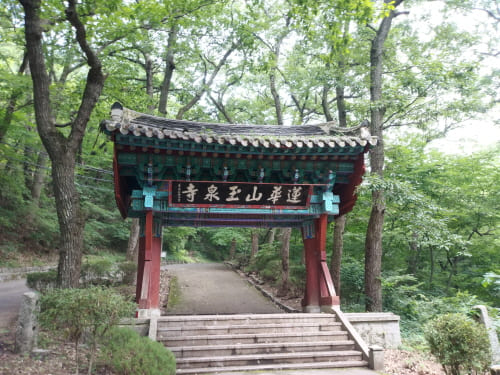

경남고성 연화산 여행기
경남고성 연화산(도립공원)은 적멸보궁, 청련암, 옥천사 등이 있다.일정 : 2019년 7월 14일
주차장에서 장승이 반기는 입구를 지나 적멸보궁으로 처련암을 거쳐 옥천사로
비교적 편하게 산행을 하였다.

Fun
재미롭거나 인상적인 것
장승
입구에서 다소 어둔한 모습으로 우리를 반긴다
무궁화꽃
여기서 보니 반갑다
수련
예쁜모습으로 반긴다
옥천사에서
동영상을 눌러보세요. 절에있는 개는 불성이 있는지 조용하네.